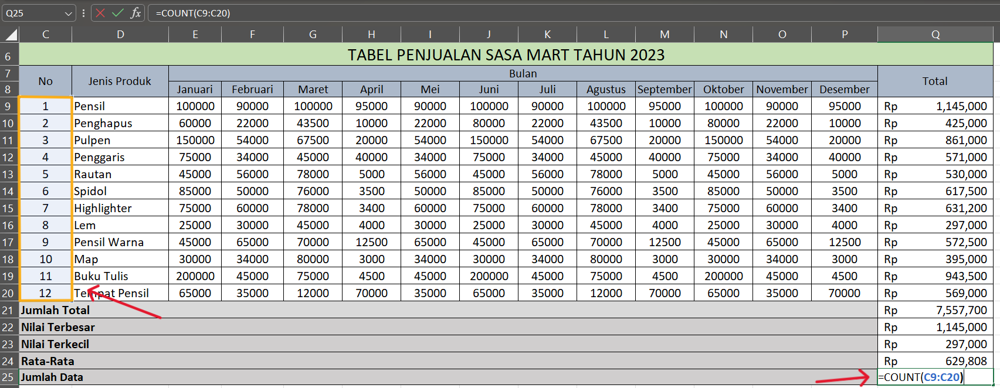
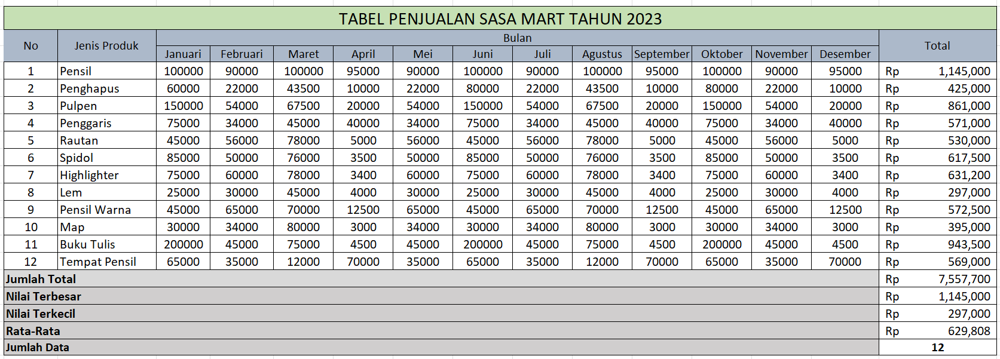
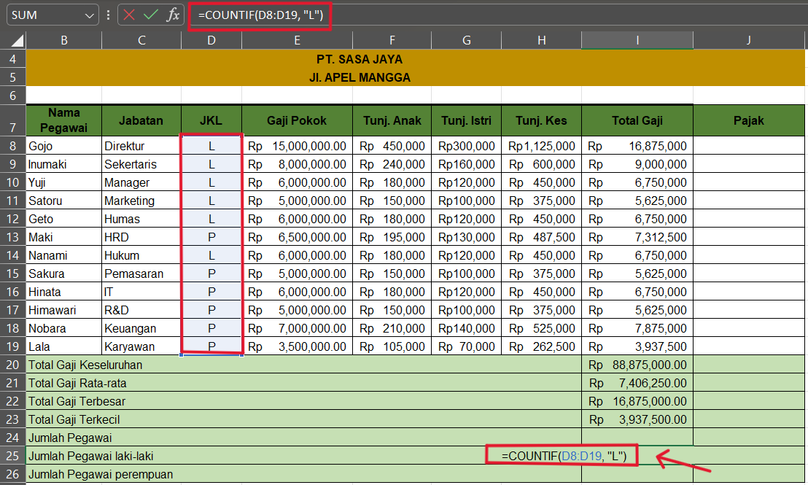
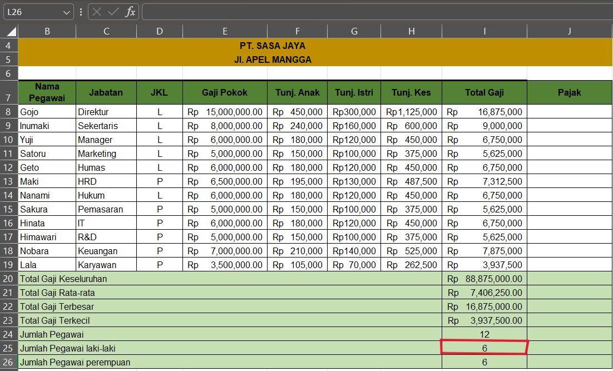

Fungsi COUNT
Fungsi COUNT digunakan untuk menghitung jumlah sel yang berisi angka dalam suatu rentang. COUNT digunakan ketika ingin mengetahui total data numerik tanpa memperhatikan nilai spesifiknya.
1. Pilih sel tempat yang akan menampilkan penggunaan fungsi count.
2. Ketik rumus =COUNT( lalu pilih rentang sel yang berisi data yang ingin dihitung, misalnya Q9:Q2O
3. Lengkapi rumus dengan menutup kurung dan tekan Enter. Contoh lengkapnya =COUNT(Q9:Q2O).
4. Hasil penggunaan fungsi count
Fungsi COUNT IF
Fungsi COUNT IF Digunakan untuk menghitung jumlah sel yang memenuhi suatu kriteria tertentu dalam suatu rentang.
Dalam tutorial ini, Anda akan mempelajari cara menggunakan kedua fungsi ini dengan mudah. Langkah-langkah yang disajikan akan membantu Anda memahami penerapannya.
1. Pilih sel tempat yang akan menampilkan nilai dari penggunaan fungsi countif
2. Ketik rumus =COUNTIF( lalu pilih rentang sel yang berisi data yang ingin dihitung dan kriteria, misalnya data yang akan dihitung pada rentang nilai D8:D19 dan memiliki kriteria laki laki "L"
3. Lengkapi rumus dengan menutup kurung dan tekan Enter. Contoh lengkapnya =COUNTIF(D8:D19,"L")
4. Hasil penggunaan fungsi COUNT IF
